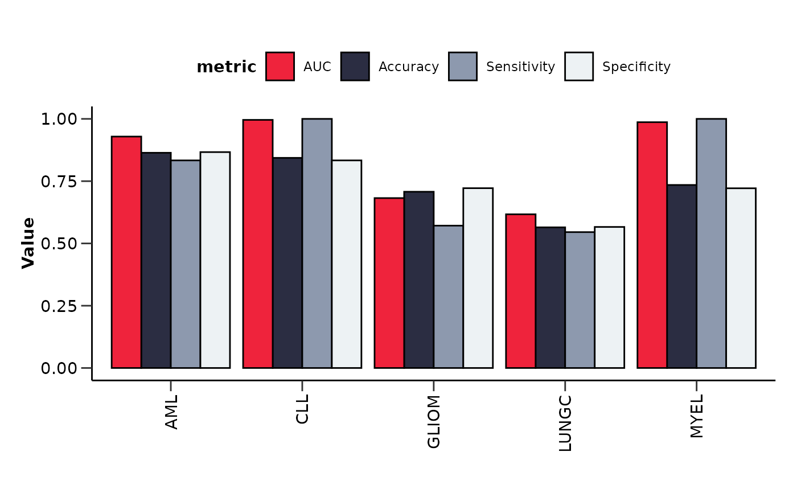
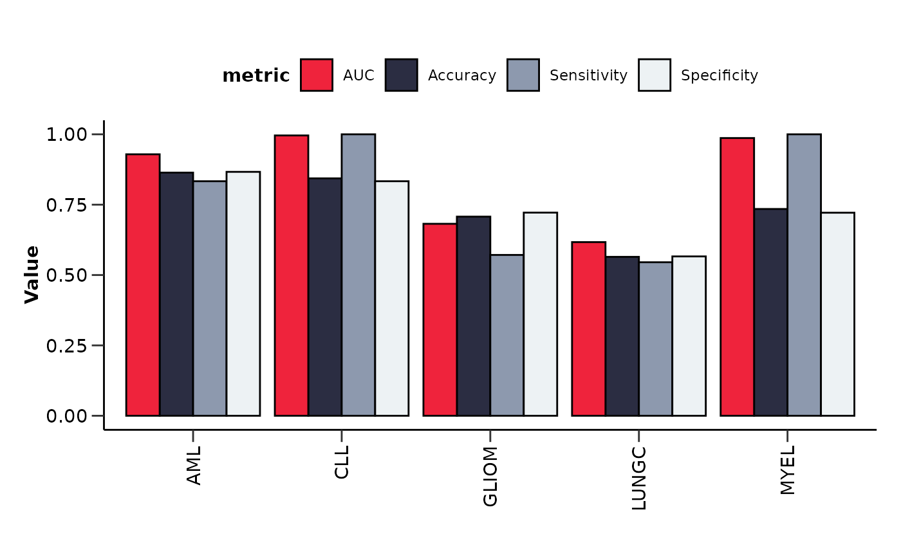

hd_plot_model_summary() plots the number of features and the number of top
features (feature importance > user defined threshold) for each disease in a barplot.
It also plots the upset plot of the top or all features, as well as a summary line plot
of the model performance metrics.
Usage
hd_plot_model_summary(
model_results,
importance = 0.5,
class_palette = NULL,
upset_top_features = FALSE
)Arguments
- model_results
A list of binary classification model results. It should be a list of objects created by
hd_model_rreg(),hd_model_rf()orhd_model_lr()with the classes as names. See the examples for more details.- importance
The importance threshold to consider a feature as top. Default is 0.5.
- class_palette
The color palette for the classes. If it is a character, it should be one of the palettes from
hd_palettes(). Default is NULL.- upset_top_features
Whether to plot the upset plot for the top features or all features. Default is FALSE (all features).
Examples
# Initialize an HDAnalyzeR object with only a subset of the predictors
hd_object <- hd_initialize(example_data, example_metadata)
# Split the data into training and test sets
hd_split <- hd_split_data(hd_object, variable = "Disease")
#> Warning: Too little data to stratify.
#> • Resampling will be unstratified.
# Run the regularized regression model pipeline
model_results_aml <- hd_model_rreg(hd_split,
variable = "Disease",
case = "AML",
grid_size = 2,
cv_sets = 2,
verbose = FALSE)
#> The groups in the train set are balanced. If you do not want to balance the groups, set `balance_groups = FALSE`.
model_results_cll <- hd_model_rreg(hd_split,
variable = "Disease",
case = "CLL",
grid_size = 2,
cv_sets = 2,
verbose = FALSE)
#> The groups in the train set are balanced. If you do not want to balance the groups, set `balance_groups = FALSE`.
model_results_myel <- hd_model_rreg(hd_split,
variable = "Disease",
case = "MYEL",
grid_size = 2,
cv_sets = 2,
verbose = FALSE)
#> The groups in the train set are balanced. If you do not want to balance the groups, set `balance_groups = FALSE`.
model_results_lungc <- hd_model_rreg(hd_split,
variable = "Disease",
case = "LUNGC",
grid_size = 2,
cv_sets = 2,
verbose = FALSE)
#> The groups in the train set are balanced. If you do not want to balance the groups, set `balance_groups = FALSE`.
model_results_gliom <- hd_model_rreg(hd_split,
variable = "Disease",
case = "GLIOM",
grid_size = 2,
cv_sets = 2,
verbose = FALSE)
#> The groups in the train set are balanced. If you do not want to balance the groups, set `balance_groups = FALSE`.
res <- list("AML" = model_results_aml,
"LUNGC" = model_results_lungc,
"CLL" = model_results_cll,
"MYEL" = model_results_myel,
"GLIOM" = model_results_gliom)
# Plot summary visualizations
hd_plot_model_summary(res, class_palette = "cancers12")
#> $features_barplot
 #>
#> $metrics_barplot

#>
#> $upset_plot_features
#>
#> $metrics_barplot

#>
#> $upset_plot_features
 #>
#> $features_df
#> # A tibble: 100 × 3
#> Shared_in `up/down` Feature
#> <chr> <chr> <chr>
#> 1 AML&LUNGC&CLL&MYEL&GLIOM up AARSD1
#> 2 AML&LUNGC&CLL&MYEL&GLIOM up ABL1
#> 3 AML&LUNGC&CLL&MYEL&GLIOM up ACAA1
#> 4 AML&LUNGC&CLL&MYEL&GLIOM up ACAN
#> 5 AML&LUNGC&CLL&MYEL&GLIOM up ACE2
#> 6 AML&LUNGC&CLL&MYEL&GLIOM up ACOX1
#> 7 AML&LUNGC&CLL&MYEL&GLIOM up ACP5
#> 8 AML&LUNGC&CLL&MYEL&GLIOM up ACP6
#> 9 AML&LUNGC&CLL&MYEL&GLIOM up ACTA2
#> 10 AML&LUNGC&CLL&MYEL&GLIOM up ACTN4
#> # ℹ 90 more rows
#>
#> $features_list
#> $features_list$`AML&LUNGC&CLL&MYEL&GLIOM`
#> [1] "ANGPT1" "ADGRG1" "AMY2A" "ADAMTS16" "ADA" "AHCY"
#> [7] "ADAM8" "AMIGO2" "ANGPTL2" "ALCAM" "APEX1" "ADH4"
#> [13] "AMFR" "AK1" "ABL1" "ANPEP" "ATP6V1D" "AARSD1"
#> [19] "ANKRD54" "APOH" "ALDH1A1" "AXL" "APBB1IP" "ADGRE2"
#> [25] "ACP6" "ATG4A" "APOM" "ACAN" "ANXA11" "AGR3"
#> [31] "ARHGAP1" "ADGRG2" "ATXN10" "APP" "AMBN" "AMBP"
#> [37] "ACP5" "AGRN" "ADAM15" "ADAMTS13" "ARTN" "ANXA5"
#> [43] "ACTA2" "ATOX1" "APLP1" "ARNT" "ACY1" "ANXA4"
#> [49] "ANG" "ATF2" "AMN" "ANGPT2" "ALDH3A1" "ANGPTL7"
#> [55] "ANGPTL3" "AKR1B1" "AOC3" "AGRP" "AZU1" "ANXA3"
#> [61] "B4GALT1" "ADCYAP1R1" "AKT3" "AGXT" "ARSB" "ATP5IF1"
#> [67] "ARHGEF12" "AKT1S1" "ACOX1" "ATP6V1F" "ADAM23" "ARHGAP25"
#> [73] "ACAA1" "ACE2" "ACTN4" "ADA2" "ADAMTS15" "ADAMTS8"
#> [79] "ADGRE5" "ADM" "AGER" "AGR2" "AHSP" "AIF1"
#> [85] "AIFM1" "AKR1C4" "ALPP" "AMY2B" "ANGPTL1" "ANGPTL4"
#> [91] "ANXA10" "AOC1" "AREG" "ARG1" "ARID4B" "ARSA"
#> [97] "ART3" "ATP5PO" "ATP6AP2" "AXIN1"
#>
#>
#>
#> $features_df
#> # A tibble: 100 × 3
#> Shared_in `up/down` Feature
#> <chr> <chr> <chr>
#> 1 AML&LUNGC&CLL&MYEL&GLIOM up AARSD1
#> 2 AML&LUNGC&CLL&MYEL&GLIOM up ABL1
#> 3 AML&LUNGC&CLL&MYEL&GLIOM up ACAA1
#> 4 AML&LUNGC&CLL&MYEL&GLIOM up ACAN
#> 5 AML&LUNGC&CLL&MYEL&GLIOM up ACE2
#> 6 AML&LUNGC&CLL&MYEL&GLIOM up ACOX1
#> 7 AML&LUNGC&CLL&MYEL&GLIOM up ACP5
#> 8 AML&LUNGC&CLL&MYEL&GLIOM up ACP6
#> 9 AML&LUNGC&CLL&MYEL&GLIOM up ACTA2
#> 10 AML&LUNGC&CLL&MYEL&GLIOM up ACTN4
#> # ℹ 90 more rows
#>
#> $features_list
#> $features_list$`AML&LUNGC&CLL&MYEL&GLIOM`
#> [1] "ANGPT1" "ADGRG1" "AMY2A" "ADAMTS16" "ADA" "AHCY"
#> [7] "ADAM8" "AMIGO2" "ANGPTL2" "ALCAM" "APEX1" "ADH4"
#> [13] "AMFR" "AK1" "ABL1" "ANPEP" "ATP6V1D" "AARSD1"
#> [19] "ANKRD54" "APOH" "ALDH1A1" "AXL" "APBB1IP" "ADGRE2"
#> [25] "ACP6" "ATG4A" "APOM" "ACAN" "ANXA11" "AGR3"
#> [31] "ARHGAP1" "ADGRG2" "ATXN10" "APP" "AMBN" "AMBP"
#> [37] "ACP5" "AGRN" "ADAM15" "ADAMTS13" "ARTN" "ANXA5"
#> [43] "ACTA2" "ATOX1" "APLP1" "ARNT" "ACY1" "ANXA4"
#> [49] "ANG" "ATF2" "AMN" "ANGPT2" "ALDH3A1" "ANGPTL7"
#> [55] "ANGPTL3" "AKR1B1" "AOC3" "AGRP" "AZU1" "ANXA3"
#> [61] "B4GALT1" "ADCYAP1R1" "AKT3" "AGXT" "ARSB" "ATP5IF1"
#> [67] "ARHGEF12" "AKT1S1" "ACOX1" "ATP6V1F" "ADAM23" "ARHGAP25"
#> [73] "ACAA1" "ACE2" "ACTN4" "ADA2" "ADAMTS15" "ADAMTS8"
#> [79] "ADGRE5" "ADM" "AGER" "AGR2" "AHSP" "AIF1"
#> [85] "AIFM1" "AKR1C4" "ALPP" "AMY2B" "ANGPTL1" "ANGPTL4"
#> [91] "ANXA10" "AOC1" "AREG" "ARG1" "ARID4B" "ARSA"
#> [97] "ART3" "ATP5PO" "ATP6AP2" "AXIN1"
#>
#>